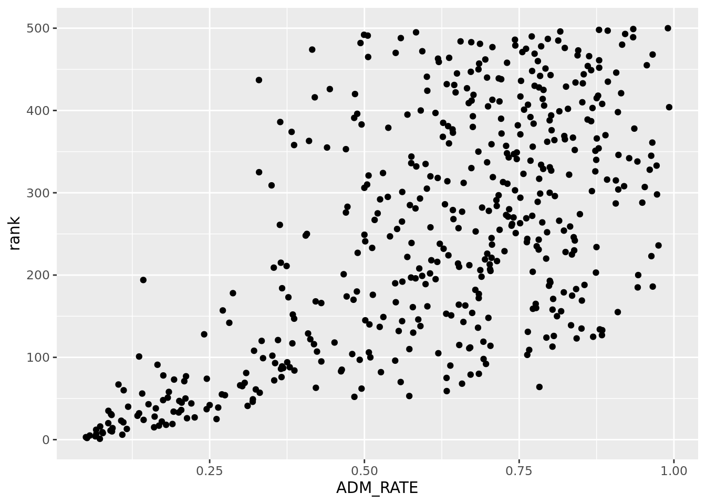
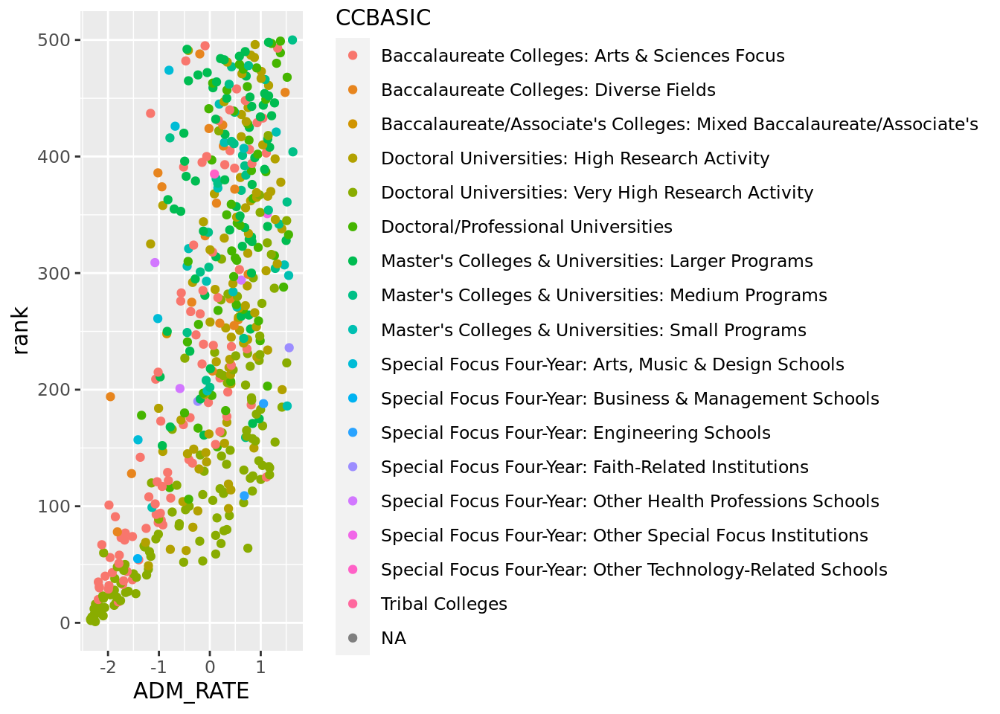
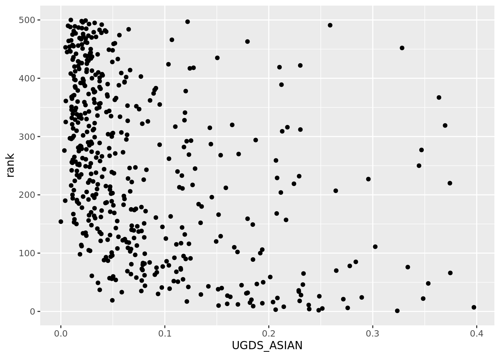
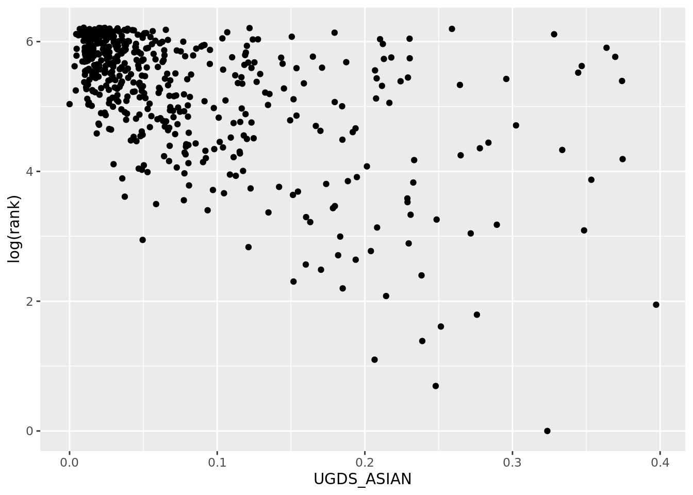
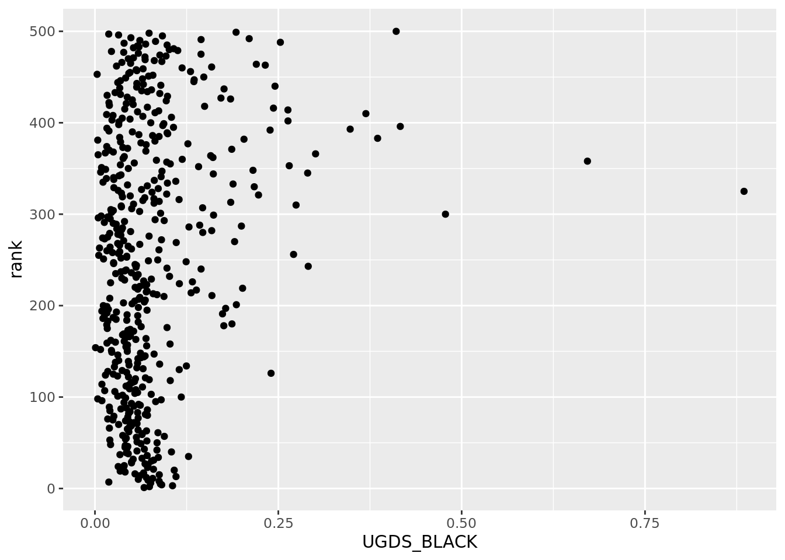
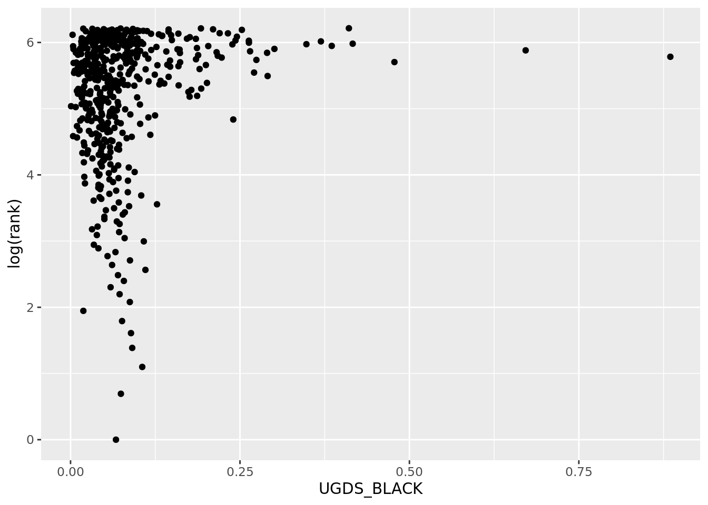

library(tidyverse)
library(corrplot)
library(tidymodels)Project title
Report
Introduction and data
Every year, millions of students apply to colleges across the United State, and many of them use college rankings lists from sources such as US News and World Report, Forbes.com, and Niche.com to to help them decide where to apply and where to go. In recent years, these lists have been heavily criticized for focusing on “exclusivity and resources, rather than accessibility and economic mobility” (1).The system can also be easily gamed by a university if that university focuses on improving the metrics used in the list, as seen in Northeastern University meteoric rise from #163 to #49 on the US News and World Report list, in only 17 year; the president even explicitly stated that it a top priority of the university to raise its ranking (2).
(1) https://thehill.com/changing-america/enrichment/education/3641004-the-scandal-facing-college-ranking-lists-explained/
(2) https://www.bostonmagazine.com/news/2014/08/26/how-northeastern-gamed-the-college-rankings/
These lists are important because students applying to college trust these rankings and weigh them into their college decisions. Due to large impact that a college has on a student’s life, it is important to know where these ranking come from and what they actually measure. In this project, we will explore how influential different metrics are in determining a college’s ranking.
In general, we want to examine how different variables affect a school’s ranking on the Niche College Ranking List. We plan to look at variables that are typically thought to influence school rank such as average SAT score and acceptance rate, but we also want to look at variables that aren’t typically thought of such as geographic region or endowment size.
Question: What variables (and what types of variables) have the greatest influence on school’s place in the Niche College Ranking List?
Hypothesis: We hypothesize that: ACT/SAT test score, acceptance rate, and median earnings 10 years after graduation will have the biggest impact on college rank.
In our project, we will join two data sets: The Niche College Rankings list and the US Department of Education College Scorecard
Data Set #1: Niche
The first data set comes from Niche’s “2023 Best Colleges in America” list
(https://www.niche.com/colleges/search/best-colleges/)
Niche aggregates data from a variety of sources, including the US Department of Education and reviews from students and alumni, to build their list of college rankings. The rankings list is updated monthly to reflect new data that Niche receives; although, data from the US Department o Education is only received on an annual basis. The Niche data was scraped by Maia on October 17-19 2022.
There are 500 observations, representing the top 500 schools in the United States. Each observation has two variables: the name of the school (
college) and (rank) and the rank of the school.
Data Set #2: US Department of Education
The second data set comes from the US Department of Education’s College Scorecard, which is an exhaustive summary of characteristics and statistics for all colleges and universities in the United States.
(https://collegescorecard.ed.gov/data/)
The College Scorecard is updated by the Education Department as it collects new data. Data used in the scorecard comes comes from data reported by the institutions, data on federal financial aid, data from taxes, and data from other federal agencies.
There were 2,989 variables in the original data set, many of which we don’t need to answer our question, and since this data set was too large to load into RStudio, we used Excel to narrow this to 63 variables.There are 6681 observations in the data set, representing all of the colleges and universities in the United States.
Here is a summary of the data we will be using in or analysis.
Variable Name C/Q Description Levels of Cat. Variable college C Institution name rank Q Niche rank REGION C New England, Mid East, Great Lakes, Plains, Southeast, Southwest, Rocky Mountains, Far West, Outlying Areas ACCREDAGENCY C Accreditor for Institution CONTROL C Public, Private nonprofit, private for-profit CCBASIC C Carnegie Classification --basic ADM_RATE Q Admission rate UGDS Q Enrollment of undergraduate certificate/degree-seeking students UGDS_WHITE Q Total share of enrollment of undergraduate degree-seeking students who are white UGDS_BLACK Q Total share of enrollment of undergraduate degree-seeking students who are black UGDS_HISP Q Total share of enrollment of undergraduate degree-seeking students who are Hispanic UGDS_ASIAN Q Total share of enrollment of undergraduate degree-seeking students who are Asian UGDS_AIAN Q Total share of enrollment of undergraduate degree-seeking students who are American Indian/Alaska Native UGDS_NHPI Q Total share of enrollment of undergraduate degree-seeking students who are Native Hawaiian/Pacific Islander UGDS_2MOR Q Total share of enrollment of undergraduate degree-seeking students who are two or more races UGDS_NRA Q Total share of enrollment of undergraduate degree-seeking students who are non-resident aliens UGDS_UNKN Q Total share of enrollment of undergraduate degree-seeking students whose race is unknown NPT4_PUB Q Average net price for Title IV institutions (public institutions) NPT4_PRIV Q Average net price for Title IV institutions (private for-profit and nonprofit institutions) COSTT4_A Q Average cost of attendance (academic year institutions) COSTT4_P Q Average cost of attendance (program-year institutions) AVGFACSAL Q Average faculty salary PCTPELL Q Percentage of undergraduates who receive a Pell Grant C150_4 Q Completion rate for first-time, full-time students at four-year institutions (150% of expected time to completion) AGE_ENTRY Q Average age of entry FEMALE Q Share of female students MARRIED Q Share of married students FIRST_GEN Q Share of first-generation students FAMINC Q Average family income MD_FAMINC Q Median family income ENDOWBEGIN Q Value of school’s endowment at the beginning of the fiscal year SAT_AVG Q Average SAT equivalent score of students admitted SATVRMID Q Midpoint of SAT scores at the institution (critical reading) SATMTMID Q Midpoint of SAT scores at the institution (math) SATWRMID Q Midpoint of SAT scores at the institution (writing) ACTCMMID Q Midpoint of the ACT cumulative score ACTENMID Q Midpoint of the ACT english score ACTMTMID Q Midpoint of the ACT math score ACTWRMID Q Midpoint of the ACT writing score
Methodology
The methodology section should include visualizations and summary statistics relevant to your research question. You should also justify the choice of statistical method(s) used to answer your research question.
Import, Tidy, and Join Data
These steps were done in an R script titled create-colleges-dataset.R
Scrape the data Niche.com and download data from the US Department of Education, and import.
Change college names in Department of Education file to match Niche file
Left join the
us_dep_of_eddata set to Niche data set (colleges) by school name to make a new data set with 500 observations and 64 variables.The Observations for
University of South Florida - Sarasota-ManateeandUniversity of South Florida - St. Petersburghave been dropped from thecollegesdata set due to their non-existence in theus_dep_of_eddata set. They were not present in the data set because these two universities were combined with the main University of South Florida campus. This is why thecollegesdata set only has 498 observations
Prepare Data
- Pick variables that make sense to focus on
- Standardize all the continuous variables to z-scores, mean = 0, standard deviation = 1
colleges <- read_csv("data/colleges.csv")Rows: 498 Columns: 64
── Column specification ────────────────────────────────────────────────────────
Delimiter: ","
chr (5): college, CITY, STABBR, ZIP, ACCREDAGENCY
dbl (58): rank, UNITID, OPEID, OPEID6, LATITUDE, LONGITUDE, REGION, CCBASIC,...
lgl (1): UG
ℹ Use `spec()` to retrieve the full column specification for this data.
ℹ Specify the column types or set `show_col_types = FALSE` to quiet this message.scaled_data <- read_csv("data/scaled_data.csv")Rows: 498 Columns: 39
── Column specification ────────────────────────────────────────────────────────
Delimiter: ","
chr (5): REGION, CONTROL, CCBASIC, college, ACCREDAGENCY
dbl (34): rank, ADM_RATE, UGDS, UGDS_WHITE, UGDS_BLACK, UGDS_HISP, UGDS_ASIA...
ℹ Use `spec()` to retrieve the full column specification for this data.
ℹ Specify the column types or set `show_col_types = FALSE` to quiet this message.Summarize and Visualize
colleges_levels <- colleges |>
mutate(
level = case_when(
rank <= 100 ~ "1 to 100",
rank > 100 & rank <= 200 ~ "101 to 200",
rank > 200 & rank <= 300 ~ "201 to 300",
rank > 300 & rank <= 400 ~ "301 to 400",
rank > 400 & rank <= 498 ~ "401 to 498",
)
)
colleges_levels |>
group_by(level) |>
summarize(
mean_ADM_Rate = mean(ADM_RATE, na.rm = T),
mean_SAT_AVG = mean(SAT_AVG, na.rm = T),
mean_ACTCMMID = mean(ACTCMMID, na.rm = T),
mean_UGDS_WHITE = mean(UGDS_WHITE, na.rm = T),
mean_UGDS_ASIAN = mean(UGDS_ASIAN, na.rm = T),
mean_COSTT4_A = mean(COSTT4_A, na.rm = T)
)# A tibble: 6 × 7
level mean_ADM_Rate mean_SAT_AVG mean_ACTCMMID mean_UGD…¹ mean_…² mean_…³
<chr> <dbl> <dbl> <dbl> <dbl> <dbl> <dbl>
1 1 to 100 0.277 1423. 32.1 0.487 0.150 60691.
2 101 to 200 0.618 1267. 27.5 0.627 0.0698 46372.
3 201 to 300 0.682 1216. 26.0 0.614 0.0729 43883.
4 301 to 400 0.716 1160. 24.1 0.563 0.0548 40799.
5 401 to 498 0.738 1148. 23.9 0.619 0.0442 36733.
6 <NA> 0.962 1066 21 0.601 0.0167 29424.
# … with abbreviated variable names ¹mean_UGDS_WHITE, ²mean_UGDS_ASIAN,
# ³mean_COSTT4_A#| label: rank-vs-ADM_RATE
colleges |>
ggplot(aes(x = ADM_RATE, y = rank)) +
geom_point()Warning: Removed 6 rows containing missing values (geom_point).
#| label: ADM_RATE-vs-rank-stand
scaled_data |>
ggplot(aes(x = ADM_RATE, y = rank)) +
geom_point()Warning: Removed 6 rows containing missing values (geom_point).
#| label: rank-vsADM_RATE-by-CCBASIC
scaled_data |>
ggplot(aes(x = ADM_RATE, y = rank, color = CCBASIC)) +
geom_point()Warning: Removed 6 rows containing missing values (geom_point).
scaled_data |>
ggplot(aes(x = ADM_RATE, y = rank, color = CONTROL)) +
geom_point()Warning: Removed 6 rows containing missing values (geom_point).
#| label: ADM_RATE-vs-rank-by-ACCREDAGENCY
scaled_data |>
ggplot(aes(x = ADM_RATE, y = rank, color = ACCREDAGENCY)) +
geom_point(show.legend = F)Warning: Removed 6 rows containing missing values (geom_point).colleges |>
ggplot(aes(x = UGDS_WHITE, y = rank)) +
geom_point()Warning: Removed 3 rows containing missing values (geom_point).
colleges |>
ggplot(aes(x = UGDS_ASIAN, y = rank)) +
geom_point()Warning: Removed 3 rows containing missing values (geom_point).
colleges |>
ggplot(aes(x = UGDS_ASIAN, y = log(rank))) +
geom_point()Warning: Removed 3 rows containing missing values (geom_point).
colleges |>
ggplot(aes(x = UGDS_BLACK, y = rank)) +
geom_point()Warning: Removed 3 rows containing missing values (geom_point).
colleges |>
ggplot(aes(x = UGDS_BLACK, y = log(rank))) +
geom_point()Warning: Removed 3 rows containing missing values (geom_point).
scaled_data |>
ggplot(aes(x = FIRST_GEN, y = rank)) +
geom_point()Warning: Removed 21 rows containing missing values (geom_point).
scaled_data |>
ggplot(aes(x = UGDS, y = rank)) +
geom_point()Warning: Removed 3 rows containing missing values (geom_point).
scaled_data |>
ggplot(aes(x = NPT4_PRIV, y = rank)) +
geom_point()Warning: Removed 200 rows containing missing values (geom_point).
scaled_data |>
ggplot(aes(x = NPT4_PUB, y = rank)) +
geom_point()Warning: Removed 302 rows containing missing values (geom_point).
scaled_data |>
ggplot(aes(x = NPT4_PUB, y = rank)) +
geom_point()Warning: Removed 302 rows containing missing values (geom_point).
scaled_data |>
ggplot(aes(x = COSTT4_A, y = rank, color = CONTROL)) +
geom_point()Warning: Removed 6 rows containing missing values (geom_point).
scaled_data |>
ggplot(aes(x = AVGFACSAL, y = rank)) +
geom_point()Warning: Removed 3 rows containing missing values (geom_point).
scaled_data |>
ggplot(aes(x = PCTPELL, y = rank)) +
geom_point()Warning: Removed 4 rows containing missing values (geom_point).
scaled_data |>
ggplot(aes(x = C150_4, y = rank)) +
geom_point()Warning: Removed 3 rows containing missing values (geom_point).
scaled_data |>
ggplot(aes(x = AGE_ENTRY, y = rank)) +
geom_point()Warning: Removed 5 rows containing missing values (geom_point).
scaled_data |>
ggplot(aes(x = FEMALE, y = rank)) +
geom_point()Warning: Removed 13 rows containing missing values (geom_point).
scaled_data |>
ggplot(aes(x = MARRIED, y = rank)) +
geom_point()Warning: Removed 133 rows containing missing values (geom_point).
scaled_data |>
ggplot(aes(x = FIRST_GEN, y = rank)) +
geom_point()Warning: Removed 21 rows containing missing values (geom_point).
scaled_data |>
ggplot(aes(x = FAMINC, y = rank)) +
geom_point()Warning: Removed 5 rows containing missing values (geom_point).
scaled_data |>
ggplot(aes(x = MD_FAMINC, y = rank)) +
geom_point()Warning: Removed 5 rows containing missing values (geom_point).
scaled_data |>
ggplot(aes(x = ENDOWBEGIN, y = rank)) +
geom_point()Warning: Removed 14 rows containing missing values (geom_point).
#| label: rank-vs-SAT_AVG
colleges |>
ggplot(aes(x = SAT_AVG, y = rank)) +
geom_point()Warning: Removed 81 rows containing missing values (geom_point).
#| label: rank-vs-ACTCMMID
colleges |>
ggplot(aes(x = ACTCMMID, y = rank)) +
geom_point()Warning: Removed 83 rows containing missing values (geom_point).
Check correlation coefficients between all the all the exponential variables. For the ones that have a r > 0.8, pick one to put in the model. We can create multiple models with different options.
We remove the columns that has more than 100 NA and leave the rest for calculating correlations.
data_for_corr <- scaled_data |> select(is.numeric)Warning: Use of bare predicate functions was deprecated in tidyselect 1.1.0. ℹ Please use wrap predicates in `where()` instead. # Was: data %>% select(is.numeric) # Now: data %>% select(where(is.numeric))correlations = data_for_corr |> select(-c("NPT4_PUB", "NPT4_PRIV", "COSTT4_P", "SATWRMID", "SATVRMID", "SATMTMID", "ACTENMID", "ACTMTMID", "ACTWRMID")) |> na.omit() |> cor() correlations |> corrplot(method="color")
# correlations <- dataset |> # na.omit() |> # cor() correlations[correlations < 0.8 | correlations == 1] <- "" correlationsrank ADM_RATE UGDS UGDS_WHITE UGDS_BLACK UGDS_HISP UGDS_ASIAN rank "" "" "" "" "" "" "" ADM_RATE "" "" "" "" "" "" "" UGDS "" "" "" "" "" "" "" UGDS_WHITE "" "" "" "" "" "" "" UGDS_BLACK "" "" "" "" "" "" "" UGDS_HISP "" "" "" "" "" "" "" UGDS_ASIAN "" "" "" "" "" "" "" UGDS_AIAN "" "" "" "" "" "" "" UGDS_NHPI "" "" "" "" "" "" "" UGDS_2MOR "" "" "" "" "" "" "" UGDS_NRA "" "" "" "" "" "" "" UGDS_UNKN "" "" "" "" "" "" "" COSTT4_A "" "" "" "" "" "" "" AVGFACSAL "" "" "" "" "" "" "" PCTPELL "" "" "" "" "" "" "" C150_4 "" "" "" "" "" "" "" AGE_ENTRY "" "" "" "" "" "" "" FEMALE "" "" "" "" "" "" "" MARRIED "" "" "" "" "" "" "" FIRST_GEN "" "" "" "" "" "" "" FAMINC "" "" "" "" "" "" "" MD_FAMINC "" "" "" "" "" "" "" ENDOWBEGIN "" "" "" "" "" "" "" SAT_AVG "" "" "" "" "" "" "" ACTCMMID "" "" "" "" "" "" "" UGDS_AIAN UGDS_NHPI UGDS_2MOR UGDS_NRA UGDS_UNKN COSTT4_A AVGFACSAL rank "" "" "" "" "" "" "" ADM_RATE "" "" "" "" "" "" "" UGDS "" "" "" "" "" "" "" UGDS_WHITE "" "" "" "" "" "" "" UGDS_BLACK "" "" "" "" "" "" "" UGDS_HISP "" "" "" "" "" "" "" UGDS_ASIAN "" "" "" "" "" "" "" UGDS_AIAN "" "" "" "" "" "" "" UGDS_NHPI "" "" "" "" "" "" "" UGDS_2MOR "" "" "" "" "" "" "" UGDS_NRA "" "" "" "" "" "" "" UGDS_UNKN "" "" "" "" "" "" "" COSTT4_A "" "" "" "" "" "" "" AVGFACSAL "" "" "" "" "" "" "" PCTPELL "" "" "" "" "" "" "" C150_4 "" "" "" "" "" "" "" AGE_ENTRY "" "" "" "" "" "" "" FEMALE "" "" "" "" "" "" "" MARRIED "" "" "" "" "" "" "" FIRST_GEN "" "" "" "" "" "" "" FAMINC "" "" "" "" "" "" "" MD_FAMINC "" "" "" "" "" "" "" ENDOWBEGIN "" "" "" "" "" "" "" SAT_AVG "" "" "" "" "" "" "" ACTCMMID "" "" "" "" "" "" "" PCTPELL C150_4 AGE_ENTRY FEMALE rank "" "" "" "" ADM_RATE "" "" "" "" UGDS "" "" "" "" UGDS_WHITE "" "" "" "" UGDS_BLACK "" "" "" "" UGDS_HISP "" "" "" "" UGDS_ASIAN "" "" "" "" UGDS_AIAN "" "" "" "" UGDS_NHPI "" "" "" "" UGDS_2MOR "" "" "" "" UGDS_NRA "" "" "" "" UGDS_UNKN "" "" "" "" COSTT4_A "" "" "" "" AVGFACSAL "" "" "" "" PCTPELL "" "" "" "" C150_4 "" "" "" "" AGE_ENTRY "" "" "" "" FEMALE "" "" "" "" MARRIED "" "" "0.905880209781912" "" FIRST_GEN "" "" "" "" FAMINC "" "" "" "" MD_FAMINC "" "" "" "" ENDOWBEGIN "" "" "" "" SAT_AVG "" "0.83893042183357" "" "" ACTCMMID "" "0.849384841586927" "" "" MARRIED FIRST_GEN FAMINC rank "" "" "" ADM_RATE "" "" "" UGDS "" "" "" UGDS_WHITE "" "" "" UGDS_BLACK "" "" "" UGDS_HISP "" "" "" UGDS_ASIAN "" "" "" UGDS_AIAN "" "" "" UGDS_NHPI "" "" "" UGDS_2MOR "" "" "" UGDS_NRA "" "" "" UGDS_UNKN "" "" "" COSTT4_A "" "" "" AVGFACSAL "" "" "" PCTPELL "" "" "" C150_4 "" "" "" AGE_ENTRY "0.905880209781912" "" "" FEMALE "" "" "" MARRIED "" "" "" FIRST_GEN "" "" "" FAMINC "" "" "" MD_FAMINC "" "" "0.953776864530003" ENDOWBEGIN "" "" "" SAT_AVG "" "" "" ACTCMMID "" "" "" MD_FAMINC ENDOWBEGIN SAT_AVG rank "" "" "" ADM_RATE "" "" "" UGDS "" "" "" UGDS_WHITE "" "" "" UGDS_BLACK "" "" "" UGDS_HISP "" "" "" UGDS_ASIAN "" "" "" UGDS_AIAN "" "" "" UGDS_NHPI "" "" "" UGDS_2MOR "" "" "" UGDS_NRA "" "" "" UGDS_UNKN "" "" "" COSTT4_A "" "" "" AVGFACSAL "" "" "" PCTPELL "" "" "" C150_4 "" "" "0.83893042183357" AGE_ENTRY "" "" "" FEMALE "" "" "" MARRIED "" "" "" FIRST_GEN "" "" "" FAMINC "0.953776864530003" "" "" MD_FAMINC "" "" "" ENDOWBEGIN "" "" "" SAT_AVG "" "" "" ACTCMMID "" "" "0.975600694502382" ACTCMMID rank "" ADM_RATE "" UGDS "" UGDS_WHITE "" UGDS_BLACK "" UGDS_HISP "" UGDS_ASIAN "" UGDS_AIAN "" UGDS_NHPI "" UGDS_2MOR "" UGDS_NRA "" UGDS_UNKN "" COSTT4_A "" AVGFACSAL "" PCTPELL "" C150_4 "0.849384841586927" AGE_ENTRY "" FEMALE "" MARRIED "" FIRST_GEN "" FAMINC "" MD_FAMINC "" ENDOWBEGIN "" SAT_AVG "0.975600694502382" ACTCMMID ""
According to the correlation matrix, we need to remove variable pairs that have a high correlation (the absolute value > 0.8).
The second output sections only shows the correlation entries with a value greater than 0.8. These variable pairs are (MD_FAMINC, FAMINC), (C150_4, SAT_AVG), (C150_4, ACTCMMID) and (ACTCMMID, SAT_AVG). Therefore, we will drop the variables C150_4, MD_FAMINC, ACTCMMID and preserve SAT_AVG and FAMINC to represent all other variables.
Build model (Iterations)
- Put all of our chosen variables into a model
data_set <- scaled_data |>
select(c("ADM_RATE", "UGDS", "UGDS_WHITE", "UGDS_BLACK", "UGDS_HISP", "UGDS_ASIAN", "UGDS_AIAN", "UGDS_NHPI", "UGDS_2MOR", "UGDS_NRA", "UGDS_UNKN", "COSTT4_A", "AVGFACSAL", "PCTPELL", "AGE_ENTRY", "FAMINC", "ENDOWBEGIN", "SAT_AVG", "rank", "REGION", "CONTROL", "CCBASIC", "college", "ACCREDAGENCY", "FEMALE", "MARRIED", "FIRST_GEN"))
data_set# A tibble: 498 × 27
ADM_RATE UGDS UGDS_WHITE UGDS_BL…¹ UGDS_…² UGDS_…³ UGDS_A…⁴ UGDS_…⁵ UGDS_…⁶
<dbl> <dbl> <dbl> <dbl> <dbl> <dbl> <dbl> <dbl> <dbl>
1 -2.25 -0.449 -1.73 -0.121 0.243 3.09 -0.102 -0.334 1.29
2 -2.34 -0.269 -1.55 -0.0293 0.372 2.14 0.123 0.607 2.07
3 -2.34 -0.293 -1.18 0.368 -0.0533 1.62 -0.0822 -0.0312 0.982
4 -2.28 -0.418 -1.24 0.181 0.195 2.02 -0.0736 -0.199 0.713
5 -2.32 -0.419 -1.16 0.159 -0.204 2.18 -0.0994 -0.199 0.583
6 -2.10 -0.476 -1.46 -0.00790 0.285 2.49 -0.134 -0.166 0.197
7 -2.27 -0.759 -1.85 -0.728 0.471 4.02 -0.154 -0.199 1.75
8 -2.23 -0.244 -0.937 0.137 -0.251 1.71 -0.00796 -0.401 0.486
9 -2.23 -0.245 -0.881 -0.0533 -0.158 1.34 -0.0537 -0.0648 0.738
10 -2.17 -0.468 -0.487 -0.221 -0.228 0.923 0.232 -0.233 0.542
# … with 488 more rows, 18 more variables: UGDS_NRA <dbl>, UGDS_UNKN <dbl>,
# COSTT4_A <dbl>, AVGFACSAL <dbl>, PCTPELL <dbl>, AGE_ENTRY <dbl>,
# FAMINC <dbl>, ENDOWBEGIN <dbl>, SAT_AVG <dbl>, rank <dbl>, REGION <chr>,
# CONTROL <chr>, CCBASIC <chr>, college <chr>, ACCREDAGENCY <chr>,
# FEMALE <dbl>, MARRIED <dbl>, FIRST_GEN <dbl>, and abbreviated variable
# names ¹UGDS_BLACK, ²UGDS_HISP, ³UGDS_ASIAN, ⁴UGDS_AIAN, ⁵UGDS_NHPI,
# ⁶UGDS_2MOR# data_set_fit <- linear_reg() |>
# fit(rank ~ ADM_RATE + UGDS + UGDS_WHITE + UGDS_BLACK + UGDS_HISP + UGDS_ASIAN + UGDS_AIAN + UGDS_NHPI + UGDS_2MOR + UGDS_NRA + UGDS_UNKN+ COSTT4_A + AVGFACSAL + PCTPELL + AGE_ENTRY + FAMINC + ENDOWBEGIN + SAT_AVG + rank + REGION + CONTROL + CCBASIC + college + ACCREDAGENCY, data = data_set)
#
# tidy(data_set_fit)
data_set_fit <- linear_reg() |>
fit(rank ~ ADM_RATE + UGDS + UGDS_WHITE + UGDS_BLACK + UGDS_HISP + UGDS_ASIAN + UGDS_AIAN + UGDS_NHPI + UGDS_2MOR + UGDS_NRA + UGDS_UNKN + COSTT4_A + AVGFACSAL + PCTPELL + AGE_ENTRY + FAMINC + ENDOWBEGIN + SAT_AVG + rank, data = data_set)Warning in model.matrix.default(mt, mf, contrasts): the response appeared on the
right-hand side and was droppedWarning in model.matrix.default(mt, mf, contrasts): problem with term 19 in
model.matrix: no columns are assignedtidy(data_set_fit)# A tibble: 19 × 5
term estimate std.error statistic p.value
<chr> <dbl> <dbl> <dbl> <dbl>
1 (Intercept) 241. 4.13 58.4 1.50e-195
2 ADM_RATE 37.3 6.68 5.58 4.49e- 8
3 UGDS -37.3 5.76 -6.47 2.92e- 10
4 UGDS_WHITE 8186. 9025. 0.907 3.65e- 1
5 UGDS_BLACK 3456. 3809. 0.907 3.65e- 1
6 UGDS_HISP 4816. 5306. 0.907 3.65e- 1
7 UGDS_ASIAN 3466. 3812. 0.909 3.64e- 1
8 UGDS_AIAN 1439. 1682. 0.856 3.93e- 1
9 UGDS_NHPI 120. 143. 0.842 4.00e- 1
10 UGDS_2MOR 1076. 1182. 0.910 3.63e- 1
11 UGDS_NRA 2267. 2510. 0.903 3.67e- 1
12 UGDS_UNKN 1325. 1453. 0.912 3.62e- 1
13 COSTT4_A 4.61 8.54 0.540 5.89e- 1
14 AVGFACSAL -18.3 8.08 -2.26 2.41e- 2
15 PCTPELL 4.50 9.36 0.481 6.31e- 1
16 AGE_ENTRY -7.70 6.65 -1.16 2.47e- 1
17 FAMINC -20.2 10.6 -1.91 5.75e- 2
18 ENDOWBEGIN 2.58 4.92 0.523 6.01e- 1
19 SAT_AVG -70.6 10.7 -6.60 1.32e- 10We created a model based on the numerical variables that we chose for the data and created an additive model that considered how the variables influenced the rank of the college. At a first glance, variables with negative slopes mean that they have a negative correlation to ranking. For example, the higher the `SAT_AVG`, the lower the college is ranked on a numerical scale. So the college is ranked higher.
Remove variables with the lowest slope coefficients until we get the best adjusted r-squared for the overall models.
data_set_fit_true <- linear_reg() |>
fit(rank ~ ADM_RATE + UGDS + UGDS_WHITE + UGDS_BLACK + UGDS_HISP + UGDS_ASIAN + UGDS_AIAN + UGDS_NHPI + UGDS_2MOR + UGDS_NRA + UGDS_UNKN + AVGFACSAL + PCTPELL + SAT_AVG + rank, data = data_set)Warning in model.matrix.default(mt, mf, contrasts): the response appeared on the
right-hand side and was droppedWarning in model.matrix.default(mt, mf, contrasts): problem with term 15 in
model.matrix: no columns are assignedtidy(data_set_fit_true)# A tibble: 15 × 5
term estimate std.error statistic p.value
<chr> <dbl> <dbl> <dbl> <dbl>
1 (Intercept) 242. 4.10 59.0 9.64e-200
2 ADM_RATE 36.3 6.52 5.58 4.52e- 8
3 UGDS -36.8 4.25 -8.67 1.08e- 16
4 UGDS_WHITE 9986. 8978. 1.11 2.67e- 1
5 UGDS_BLACK 4216. 3790. 1.11 2.67e- 1
6 UGDS_HISP 5873. 5279. 1.11 2.67e- 1
7 UGDS_ASIAN 4226. 3793. 1.11 2.66e- 1
8 UGDS_AIAN 1784. 1673. 1.07 2.87e- 1
9 UGDS_NHPI 149. 142. 1.05 2.96e- 1
10 UGDS_2MOR 1313. 1176. 1.12 2.65e- 1
11 UGDS_NRA 2769. 2497. 1.11 2.68e- 1
12 UGDS_UNKN 1615. 1445. 1.12 2.64e- 1
13 AVGFACSAL -17.1 7.25 -2.36 1.87e- 2
14 PCTPELL 18.2 6.97 2.62 9.23e- 3
15 SAT_AVG -67.7 9.89 -6.84 2.96e- 11glance(data_set_fit_true)# A tibble: 1 × 12
r.squared adj.r.squ…¹ sigma stati…² p.value df logLik AIC BIC devia…³
<dbl> <dbl> <dbl> <dbl> <dbl> <dbl> <dbl> <dbl> <dbl> <dbl>
1 0.720 0.711 77.9 73.8 1.60e-101 14 -2395. 4821. 4886. 2.44e6
# … with 2 more variables: df.residual <int>, nobs <int>, and abbreviated
# variable names ¹adj.r.squared, ²statistic, ³devianceWe removed variables that had a slope with an absolute value less than 10 because that would mean that they have less of an impact on ranking than other variables.
- Look at slope coefficients for variables in models for variables in the model. The one with the highest slope is the most significant.
data_set |>
ggplot(aes(x = UGDS_WHITE, y = rank, color = REGION)) +
geom_point() +
geom_smooth(se = FALSE) +
scale_x_continuous(limits = c(-2,2)) +
labs(x = "Proportion of White-Identifying Undergraduate Students" ,
y = "School Ranking")`geom_smooth()` using method = 'loess' and formula 'y ~ x'Warning: Removed 24 rows containing non-finite values (stat_smooth).Warning in simpleLoess(y, x, w, span, degree = degree, parametric =
parametric, : span too small. fewer data values than degrees of freedom.Warning in simpleLoess(y, x, w, span, degree = degree, parametric =
parametric, : at 0.20523Warning in simpleLoess(y, x, w, span, degree = degree, parametric =
parametric, : radius 2.2618e-05Warning in simpleLoess(y, x, w, span, degree = degree, parametric =
parametric, : all data on boundary of neighborhood. make span biggerWarning in simpleLoess(y, x, w, span, degree = degree, parametric =
parametric, : pseudoinverse used at 0.20523Warning in simpleLoess(y, x, w, span, degree = degree, parametric =
parametric, : neighborhood radius 0.0047559Warning in simpleLoess(y, x, w, span, degree = degree, parametric =
parametric, : reciprocal condition number 1Warning in simpleLoess(y, x, w, span, degree = degree, parametric =
parametric, : at 1.1659Warning in simpleLoess(y, x, w, span, degree = degree, parametric =
parametric, : radius 2.2618e-05Warning in simpleLoess(y, x, w, span, degree = degree, parametric =
parametric, : all data on boundary of neighborhood. make span biggerWarning in simpleLoess(y, x, w, span, degree = degree, parametric =
parametric, : There are other near singularities as well. 2.2618e-05Warning in simpleLoess(y, x, w, span, degree = degree, parametric =
parametric, : zero-width neighborhood. make span bigger
Warning in simpleLoess(y, x, w, span, degree = degree, parametric =
parametric, : zero-width neighborhood. make span biggerWarning: Computation failed in `stat_smooth()`:
NA/NaN/Inf in foreign function call (arg 5)Warning: Removed 24 rows containing missing values (geom_point).
Results
Showcase how you arrived at answers to your research question using the techniques we have learned in class (and beyond, if you’re feeling adventurous).
Our preliminary result shows that the number of undergraduate students that identify as white has major impact on the ranking of a college. Because of the positive slope, the more white students a college has, the number of the ranking is bigger which means a “lower” ranking.
Provide only the main results from your analysis. The goal is not to do an exhaustive data analysis (calculate every possible statistic and perform every possible procedure for all variables). Rather, you should demonstrate that you are proficient at asking meaningful questions and answering them using data, that you are skilled in interpreting and presenting results, and that you can accomplish these tasks using R. More is not better.